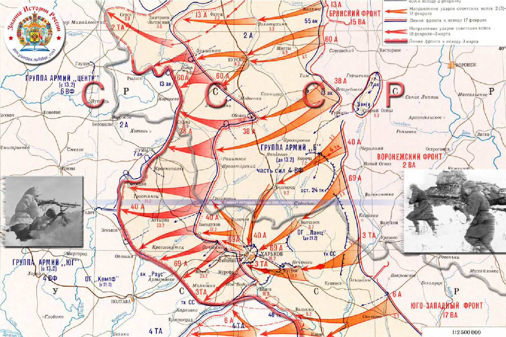
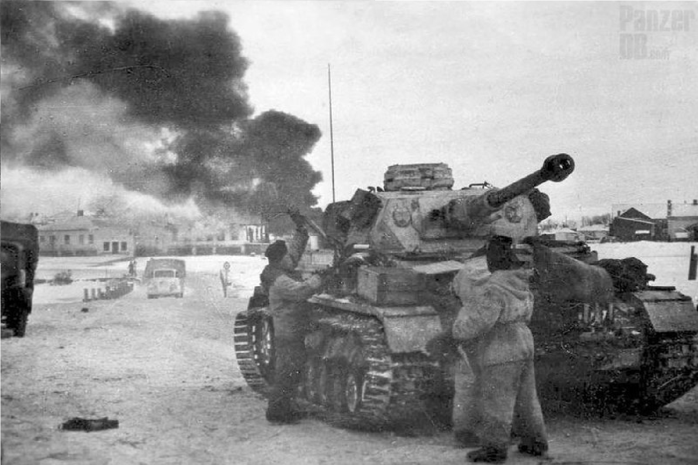
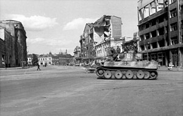

1943
|  |
|
|
19 февраля 1943 года немецкие войска под командованием генерала Эриха фон Манштейн начали наступление на Харьков, чтобы занять город и укрепить свои позиции на восточном фронте. Советы, в свою очередь, подготовили контратаку. : В марте 1943 года советские войска предприняли контрнаступление с целью окружения и уничтожения немецких сил. Однако из-за недостатка координации и быстрого продвижения противника, план не был полностью реализован. В результате контрнаступления и последующих боев советские войска потерпели поражение. Харьков был захвачен немцами 15 марта 1943 года. |
 |
|  |
Битва привела к большим потерям с обеих сторон, однако советские войска понесли более серьезные потери в живой силе и технике. Хотя немцы временно восстановили свои позиции в регионе, третья битва за Харьков предшествовала успешному советскому наступлению в будущем, что в конечном итоге изменило ход войны. Третья битва за Харьков стала одним из ключевых моментов на Восточном фронте, и хотя она закончилась поражением для советских войск, уроки, извлеченные из этой битвы, сыграли важную роль в будущих операциях. |